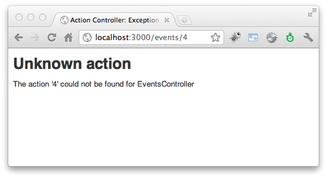
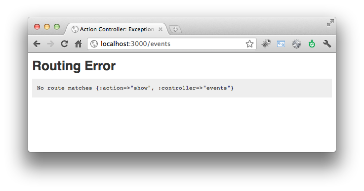
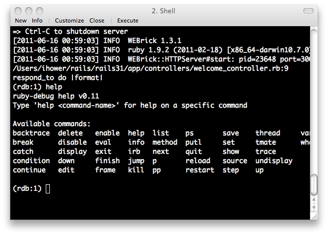

本書尚未完成，如果您有任何意見、鼓勵或勘誤，歡迎來信給我，謝謝。
RESTful路由設計是Rails的獨到創新，它使用了REST概念來建立一整組的命名路由(named routes)。
什麼是REST呢? 表象化狀態轉變Representational State Transfer，簡稱REST，是Roy Fielding博士在2000年他的博士論文中提出來的一種軟體架構風格。相較於SOAP、XML-RPC更為簡潔容易使用，也是眾多網路服務中最為普遍的API格式，像是Amazon、Yahoo!、Google等提供的API服務均有REST介面。
REST有主要有兩個核心精神：1. 使用Resource來當做識別的資源，也就是使用一個URL網址來代表一個Resource 2. 同一個Resource則可以有不同的Representations格式變化。這一章的路由實作了Resource概念，而Representation則是用respond_to方法來實作，我們會在Controller一章介紹到。
關於REST的理論可以參考筆者整理的什麼是REST跟RESTful?。不過，了解理論並不是在Rails中使用RESTful路由的前提條件，所以大可以跳過不甚理解沒關係。我們只要知道它可以帶來什麼技術上的具體好處，以及如何使用就足夠了。
RESTful帶給Rails最大的好處是：它幫助我們用一種比較標準化的方式來命名跟組織Controllers和Actions。在沒有RESTful之前，我們上一章介紹了典型路由設計方式，也就是一個個指定Controller和Action，雖然十分地簡便，但是卻沒有什麼準則。同一個Action讓不同的開發者設計，就很可能放在不同的Controller之下，更常見的是讓一個Controller放太多不相關的Action，造成單一Controller過於龐大。
將RESTful帶入Rails路由系統的點子，出自它對應了HTTP動詞POST、GET、PUT、DELETE到資料的新增、讀取、更新、刪除等四項操作。一旦將HTTP動詞考慮進來，如此我們就將原本的路由
/events/create/events/show/1/events/update/1/events/destroy/1變成
POST /events對應到Controller中的create actionGET /events/1對應到Controller中的show actionPUT /events/1對應到Controller中的update actionDELETE /events/1對應到Controller中的destroy action什麼是HTTP method？在HTTP 1.1通訊協定中制定了九種動詞(Verbs)來跟伺服器溝通，分別是HEAD、GET、POST、PUT、DELETE、TRACE、OPTIONS、CONNECT、PATCH。其中最常見的就是GET和POST：GET用來讀取資料，這個動作不應該造成任何資料變更。而POST用於送出資料，這個動作不會被快取。而因為HTML只能送出GET或透過表單送出POST，Rails為了突破這個限制，在POST加上一個隱藏參數
_method=PUT或_method=DELETE就可以當做PUT和DELETE請求了。
HTTP GET和其他動詞最大的差別在於它被認為是一個純讀取、不會修改任何資料的操作，不像POST、PUT、DELETE會修改伺服器上的資料。我們一般用瀏覽器GET網頁，可以回上一頁或重新整理，但是POST網頁要重新整理時，瀏覽器會提示你是否要在執行一次，就是這個道理。
Rails用這套慣例來大大簡化了路由設定。那程式該怎麼寫呢? 我們在config/routes.rb加入以下一行程式：
resources :events如此就會自動建立四個命名路由(named routes)，搭配四個HTTP動詞，對應到七個Actions。它的實際作用，就如同以下的設定：
get '/events' => "events#index", :as => "events"
post '/events' => "events#create", :as => "events"
get '/events/:id' => "events#show", :as => "event"
put '/events/:id' => "events#update", :as => "event"
delete '/events/:id' => "events#destroy", :as => "event"
get '/events/new' => "events#new", :as => "new_event"
get '/events/:id/edit' => "events#edit", :as => "edit_event"用這張表格會更清楚：
| Helper | GET | POST | PUT | DELETE | |
|---|---|---|---|---|---|
| event_path(@event) | /events/1 show action |
/events/1 update action |
/events/1 destroy action |
||
| events_path | /events index action |
/events create action |
|||
| edit_event_path(@event) | /events/1/edit edit action |
||||
| new_event_path | /events/new new action |
注意到這七個Action方法的名字，Rails是定好的，無法修改。這一套慣例建議你背起來，你可以這樣記憶：
event_path(@event)需要參數，根據HTTP動詞決定show、update、destroyevents_path毋需參數，根據HTTP動詞決定index、create因此，最後我們不寫：
link_to event.name, :controller => 'events', :action => :show , :id => event.id而改寫成：
link_to event.name, event_path(event)而且只需記得resources就可以寫出URL Helper。
[custom route]_event[s]_path( event ), :method => GET | POST | PUT | DELETE_path結尾是相對網址，而_url結尾則會加上完整Domain網址。
瀏覽器支援PUT跟DELETE嗎？Rails其實偷藏了
_method參數。HTML規格只定義了GET/POST，所以HTML表單是沒有PUT/DELETE的。但是XmlHttpRequest規格(也就是Ajax用的)有定義GET/POST/PUT/DELETE/HEAD/OPTIONS。
根據第一節所學到RESTful技巧，接續上一章的CRUD應用程式，來改造成RESTful應用程式，相信各位讀者可以從中發現到RESTful所帶來的簡潔好處。讓我們開始動手修改吧：
在Rails 3.1之前的版本，預設是使用prototype.js這套JavaScript函式庫。但本書改為使用JQuery這套目前學習資源最多的 JavaScript函式庫。Rails3在設計上支援更換不同的JavaScript函式庫。
prototype.js一開始就是為了讓Ruby on Rails支援Ajax所發明的(2005年)，其作者Sam Stephenson正是Ruby on Rails核心成員之一。
首先我們先更換public/javascript/rails.js的內容為jQuery版本，這個檔案是Rails的JavaScript driver。請下載http://github.com/rails/jquery-ujs/blob/master/src/rails.js這個檔案覆蓋至public/javascript/rails.js
接著，我們需要jQuery。請至jQuery 官網下載最新的JQuery至public/javascript/jquery.js，然後修改config/application.rb將以下註解移除
config.action_view.javascript_expansions[:defaults] = %w(jquery rails)
修改config/application.rb需要重新啟動伺服器。
編輯config/routes.rb，加入一個Resources：
resources :events請加在上方，routes.rb裡面越上面的規則優先權較高。
編輯app/views/events/index.html.erb，修改各個link_to的路徑：
<% @events.each do |event| %>
<li>
<%= link_to event.name, event_path(event) %>
<%= link_to 'edit', edit_event_path(event) %>
<%= button_to 'delete', event_path(event), :method => :delete %>
</li>
<% end %>
</ul>
<%= link_to 'new event', new_event_path %>注意到刪除的地方，我們多一個參數:method => :delete。非GET的操作，顧及網頁親和力可以把link_to改成用button_to。link_to如果瀏覽器的JavaScript沒開，就會無法送出GET之外的操作。button_to就無此困擾，因為Rails是產生form標籤夾帶_method參數。
編輯app/views/events/show.html.erb，修改link_to的路徑：
<%= @event.name %>
<%= simple_format(@event.description) %>
<p><%= link_to 'back to index', events_path %></p>修改app/views/events/new.html.erb的表單送出位置如下：
<%= form_for @event, :url => events_path do |f| %>在本例中，你也可以完全省略
:url參數，Rails可以根據@event推算出路由。
修改app/views/events/edit.html.erb的表單送出位置如下：
<%= form_for @event, :url => event_path(@event), :method => :put do |f| %>
:url和:method也可以省略，Rails會根據@event是新建的還是修改來推算出要不要使用PUT。
Rails 3.0之前需寫成:html => { :method => :put }，而不能簡化成:method => :put。當然，完全省略也可以。
修改app/controllers/events_controller.rb，將create Action和destroy Action裡的redirect_to改成
redirect_to events_url而update Action中的redirect_to改成
redirect_to event_url(@event)一旦完成RESTful之後，我們在上一章一開始設定的典型路由就用不到了，編輯config/routes.rb將以下程式註解掉：
# This is a legacy wild controller route that's not recommended for RESTful applications.
# Note: This route will make all actions in every controller accessible via GET requests.
# match ':controller(/:action(/:id(.:format)))'前兩行的註解告訴你，這種典型路由已經不被新的RESTful風格所推薦使用。特別是它會讓所有Actions都可以透過GET讀取到，例如接收表單的create Action最好只允許POST請求，但是打開典型路由就會讓GET請求也可以作用 ☹
明明有在config/routes.rb裡面定義了resources路由，但是出現以下的Unknown action錯誤：

排除打錯字之外，其原因多半是跟routes.rb裡面的定義順序有關。注意到在routes.rb裡面，越上面的路由規則越優先，例如如果你定義成：
Demo::Application.routes.draw do
match ':controller(/:action(/:id(.:format)))'
resources :events
end那麼網址/events/4就會優先比對到:controller/:action而去找4這個Action，這就錯了。
這錯誤通常發生在link_to裡，它抱怨找不到適合的路由規則來產生網址：

如果你是用典型路由，那麼如以下程式亂給一個不存在的Controller，就會產生一樣的錯誤了：
link_to "foobar", :controller => "No such controller", :action => "blah"因為{ :controller => "No such controller", :action => "blah" }比對不出有這個路由規則。但是如果是用RESTful路由呢？那多半是因為參數傳錯了，例如：
link_to "Show", event_path(@foobar)這個@foobar沒有定義所以是nil，event_path(@foobar)對Rails內部來說等同於{ :controller => "events", :action => "show", :id => nil }，這就造成了找不到路由的錯誤，它必須知道:id才能知道是那一個活動的show Action網址。
respond_to可以讓我們在同一個Action中，支援不同的資料格式，例如XML、JSON、Atom等。讓我們來實作看看。
Atom是一種基於XML的供稿格式，被設計為RSS的替代品，廣泛應用於Blog feed。
修改app/controllers/events_controller.rb的index Action加上XML、JSON和Atom的支援，其中to_xml和to_json是ActiveRecord內建的方法：
def index
@events = Event.page(params[:page]).per(5)
respond_to do |format|
format.html # index.html.erb
format.xml { render :xml => @events.to_xml }
format.json { render :json => @events.to_json }
format.atom { @feed_title = "My event list" } # index.atom.builder
end
end新增app/views/events/index.atom.builder檔案，內容如下：
atom_feed do |feed|
feed.title( @feed_title )
feed.updated( @events.last.created_at )
@events.each do |event|
feed.entry(event) do |entry|
entry.title( event.name )
entry.content( event.description, :type => 'html' )
end
end
end打開瀏覽器分別瀏覽看看http://localhost:3000/events.xml、http://localhost:3000/events.json、http://localhost:3000/events.atom這幾個附檔名不同的網址。
修改app/controllers/events_controller.rb的show Action加上XML和JSON的支援，這回我們試試看比較手工的方式，用Builder格式來建構XML，以及手動組Hash再轉成JSON字串：
def show
@event = Event.find(params[:id])
respond_to do |format|
format.html { @page_title = @event.name } # show.html.erb
format.xml # show.xml.builder
format.json { render :json => { id: @event.id, name: @event.name }.to_json }
end
end注意到
{ id: @event.id, name: @event.name }是Ruby 1.9才支援的語法，使用Ruby 1.8的朋友請改用{ :id => @event.id, :name => @event.name }
編輯app/views/events/show.xml.builder：
xml.event do |e|
e.name @event.name
e.description @event.description
end打開瀏覽器分別瀏覽看看http://localhost:3000/events/1.xml、http://localhost:3000/events/1.json等網址。
如果想要加上這些格式的超連結，可以在URL Helper中傳入:format參數。讓我們修改app/views/events/index.html.erb加上不同格式的超連結：
<% @events.each do |event| %>
<li>
<%= link_to event.name, event_path(event) %>
<%= link_to " (XML)", event_path(event, :format => :xml) %>
<%= link_to " (JSON)", event_path(event, :format => :json) %>
<%= link_to 'edit', edit_event_path(event) %>
<%= button_to 'delete', event_path(event), :method => :delete %>
</li>
<% end %>
</ul>
<%= link_to 'new event', new_event_path %>
<%= link_to "Atom feed", events_path(:format => :atom) %>到目前為止，總共寫了多少程式了呢?Rails提供了一個簡單的指令可以知道：
$ bundle exec rake stats就會輸出這樣的表格：
+----------------------+-------+-------+---------+---------+-----+-------+
| Name | Lines | LOC | Classes | Methods | M/C | LOC/M |
+----------------------+-------+-------+---------+---------+-----+-------+
| Controllers | 86 | 61 | 2 | 7 | 3 | 6 |
| Helpers | 4 | 4 | 0 | 0 | 0 | 0 |
| Models | 2 | 2 | 1 | 0 | 0 | 0 |
| Libraries | 0 | 0 | 0 | 0 | 0 | 0 |
| Integration tests | 0 | 0 | 0 | 0 | 0 | 0 |
| Functional tests | 49 | 39 | 1 | 0 | 0 | 0 |
| Unit tests | 11 | 6 | 2 | 0 | 0 | 0 |
+----------------------+-------+-------+---------+---------+-----+-------+
| Total | 152 | 112 | 6 | 7 | 1 | 14 |
+----------------------+-------+-------+---------+---------+-----+-------+
Code LOC: 67 Test LOC: 45 Code to Test Ratio: 1:0.7其中LOC是指不包含空行的行數。
如果是Model中的程式，你可以在命令列下輸入rails console，然後在Console中呼叫看看Model的方法看看正確與否。而除錯Controller和Views一個簡單的方法是你可以使用debug這個Helper方法，例如在app/views/events/show.html.erb中插入：
<%= debug(@event) %>這樣就會輸出@event這個值的詳細內容。不過，更為常見的是使用Logger來記錄資訊到log/development.log裡。
在Rails環境中，你可以直接使用logger或是Rails.logger來拿到這個Logger物件，它有幾個方法可以呼叫：
例如，你想要觀察程式中變數@event的值，你可以插入以下程式到要觀察的程式段落之中：
Rails.logger.debug("event: #{@event.inspect}")開一個指令視窗執行tail -f log/development.log來觀察log檔案，接著開瀏覽器跑實際跑過這段程式，你就會在log/development.log看到除錯訊息了。
在Production環境中，log/production.log會逐漸長大，可以使用 logrotate 定期整理 Rails Log 檔案。
Rails也可以使用中斷點的除錯方式，請編輯Gemfile打開以下的註解：
# To use debugger (ruby-debug for Ruby 1.8.7+, ruby-debug19 for Ruby 1.9.2+)
# gem 'ruby-debug'
gem 'ruby-debug19', :require => 'ruby-debug'然後在要設定中斷點的地方呼叫debugger方法，你的伺服器程式或Console就會在這裡停下來讓你檢查。不過，會必須要用到這招的情形不多就是了。

我們會在測試一章介紹如何撰寫測試程式。撰寫單元測試可以大大降低除錯時間。